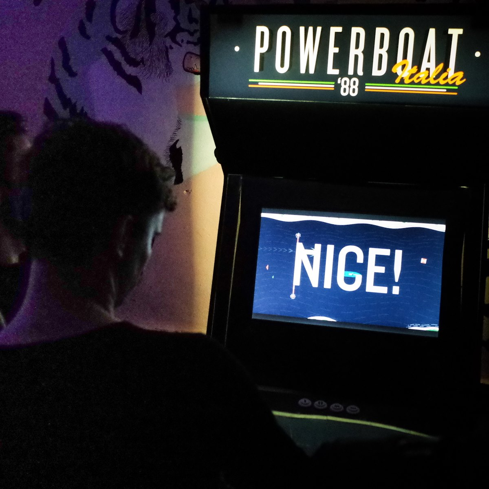

Now Featuring...
{kind=link}
{kind=link}
{kind=link}
{kind=link}
Powerboat Italia '88 ///
POWERBOAT ITALIA '88 is frenetic speedboat racing game that combines old-school button mashing with precision maneuvering and timing. Up to 4 powerboaters storm their way toward the prospect of supreme victory and unending fame by boosting over hurdles, snagging powerups, and blocking the paths of their rivals. It's a true test of endurance... and a measure of just how far you'll go to win.

{kind=link}
{kind=link}
{kind=link}
{kind=link}
{kind=link}
Upcoming Games
Sombrero ///
SOMBRERO is a fast-paced, Spaghetti Western-themed 2D local multiplayer arena-based competitive deathmatch game — that's a mouthful, pardner.
Fútbol Forever ///
Long after the purge of Earth, humanity holds the pieces of its destroyed culture tightly. Now, on the brink of extinction with no home to return to, humanity must redefine itself. Though they need not start from scratch. They have a piece of Old Earth that could never be destroyed or taken away. They have the glory and the pride of the old world to help shape their future.
They have Fútbol.
Previous Games

Field-1

Crystal Brawl

Nest